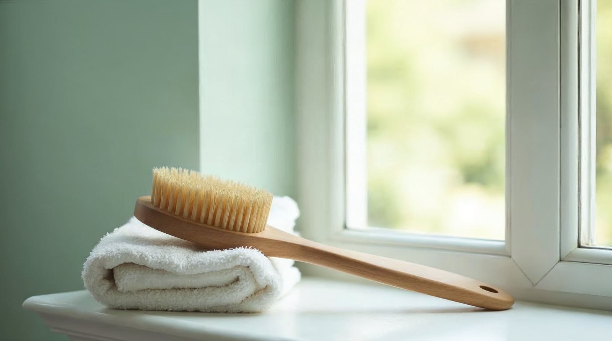
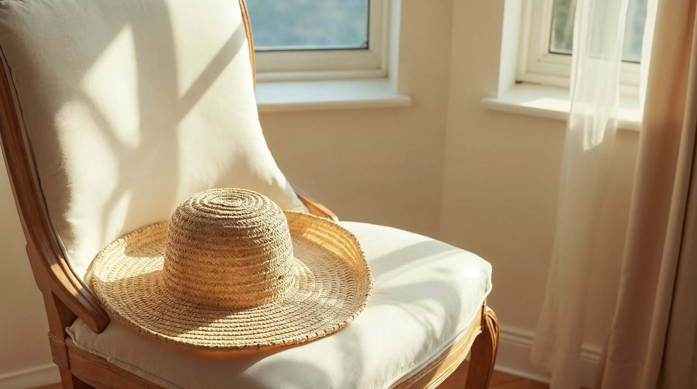
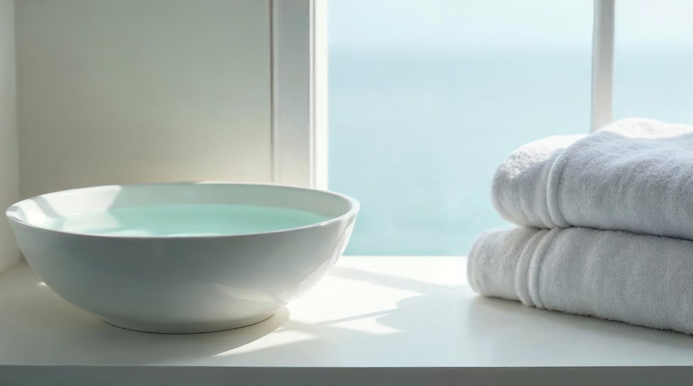
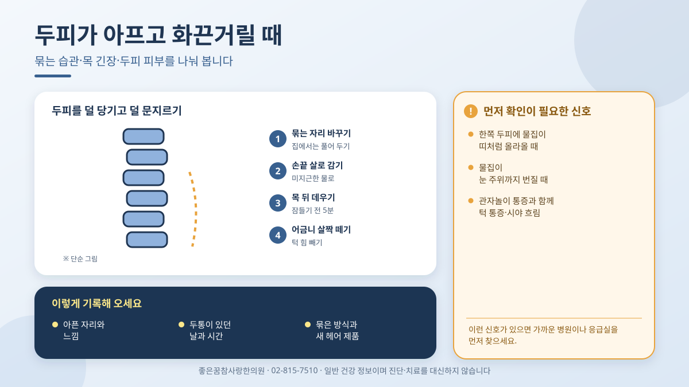

이종호 한의사 감수좋은꿈참사랑한의원 대표원장 (한의사 면허번호 19769)발행 2026-11-26 · 수정 2026-11-26
이 글의 차례
아침에 머리를 묶으려고 머리카락을 쓸어 올리는 순간, 정수리 한쪽이 찌릿하게 아픕니다. 샴푸를 할 때도 손끝이 닿는 자리마다 따끔거려 살살 문지르게 됩니다. 겉으로 보기에는 아무것도 없는데 두피가 왜 이렇게 아픈지, 진료실에서 꽤 자주 듣는 질문입니다.
두피 통증을 말씀하실 때 표현은 다양합니다. 머리카락 뿌리가 아프다, 두피가 멍든 것처럼 쓰라리다, 불에 덴 듯 화끈거린다, 개미가 기어가는 것 같다, 머리끈을 풀었는데도 당기는 느낌이 남는다. 모두 같은 두피 통증으로 묶이지만 들여다보면 이유가 조금씩 다릅니다.
많은 분이 탈모의 시작이 아닐까 걱정하며 오십니다. 두피가 아프면서 머리카락이 함께 빠지는 경우도 있지만, 통증만 있고 머리카락은 그대로인 경우가 더 흔합니다. 걱정이 앞서면 거울을 자주 보고 두피를 자꾸 만지게 되어 예민함이 더 커지기도 합니다.
그래서 저는 아픈 자리와 느낌, 그리고 그 느낌이 시작된 시기의 생활을 먼저 여쭙니다. 목과 어깨가 굳어 있었는지, 잠을 설쳤는지, 머리를 세게 묶는 습관이 있는지, 두피에 각질이나 붉은 기운은 없는지를 함께 보면 실마리가 잡히는 경우가 많습니다.
두피가 아프다는 것은 어떤 상태인가요?
두피는 얇은 피부 아래 근육막이 넓게 덮여 있고, 그 사이로 감각을 전하는 신경이 여러 갈래로 지나갑니다. 이마 쪽, 관자놀이 쪽, 뒤통수 쪽 신경이 각각 다른 자리를 맡고 있어서 아픈 자리를 보면 어느 쪽이 예민해졌는지 짐작해 볼 수 있습니다.
두피 통증은 크게 세 가지로 나눠 봅니다. 근육과 근막이 굳어 눌렀을 때 아픈 경우, 피부 자체에 염증이 있어 따갑고 가려운 경우, 그리고 겉으로는 아무 이상이 없는데 신경이 예민해져 화끈거리거나 찌릿한 경우입니다. 실제로는 두세 가지가 겹쳐 있는 경우도 많습니다.
머리를 감거나 빗을 때 아픈 것은 대개 두피 표면이 예민해진 상태입니다. 평소에는 느끼지 못하던 가벼운 자극이 통증처럼 느껴지는 것인데, 두통이 잦은 분에게서 특히 자주 나타납니다. 두통이 오기 전이나 지나간 뒤에 두피가 쓰라리다고 하시는 분이 많습니다.
이렇게 예민해진 두피는 그 자체로 위험한 신호라기보다 몸이 지쳐 있다는 표시인 경우가 많습니다. 잠과 긴장을 함께 살피면서 두피를 덜 자극하는 습관을 들이면, 따가운 날이 조금씩 줄어드는 흐름을 보이는 분이 많습니다.
왜 두피가 화끈거리고 쓰라릴까요
두피 통증이 생기는 이유는 한 가지로 정리되지 않습니다. 진료실에서 흔히 겹쳐 있는 이유는 이렇습니다.
- 오래 앉아 고개를 숙이고 일해 목 뒤와 어깨가 굳은 경우
- 긴장성 두통이나 편두통이 잦은 경우
- 머리를 늘 같은 자리에서 세게 묶거나 핀으로 고정하는 경우
- 지루성 두피염, 접촉피부염처럼 두피 피부에 염증이 있는 경우
- 염색, 펌, 새 샴푸를 쓴 뒤 두피가 자극받은 경우
- 잠이 부족하고 마음이 쫓기는 시기가 이어진 경우
- 한쪽 두피가 따갑다가 며칠 뒤 물집이 올라오는 대상포진 초기
뒤통수 아래에서 정수리 쪽으로 찌릿한 통증이 뻗친다면 뒤통수 신경이 목 근육 사이에서 눌리거나 예민해진 경우를 생각해 봅니다. 목을 오래 숙이고 있었거나 베개 높이가 맞지 않을 때 심해지는 경우가 많습니다.
한의학에서는 목과 어깨의 긴장이 위로 올라가 머리의 흐름이 막혔다고 보거나, 열이 위로 몰려 두피가 화끈거린다고 표현하기도 합니다. 진찰할 때 쓰는 전통적인 설명 방식이며, 피부 상태와 생활 습관을 함께 놓고 판단합니다.

비슷해 보여도 나눠 보는 것들
두피가 아프면서 가렵고, 비듬이 많고, 붉은 기운이 보인다면 피부 쪽 문제를 먼저 생각합니다. 이때는 피부과에서 두피 상태를 확인받는 것이 도움이 됩니다. 각질과 염증이 가라앉으면 통증도 함께 줄어드는 경우가 많습니다.
겉으로는 깨끗한데 누르면 아프고, 목과 어깨가 함께 뻣뻣하다면 근육과 근막 쪽을 먼저 봅니다. 두통이 있는 날 더 심하고, 목을 풀고 나면 한결 가벼워진다면 이쪽에 가깝습니다.
한쪽 두피만 찌릿하거나 화끈거리고, 옷깃이나 바람이 스치기만 해도 따갑다면 대상포진 초기일 가능성도 생각해야 합니다. 며칠 사이 같은 자리에 붉은 반점이나 물집이 생기면 피부과나 내과 진료를 먼저 받으시길 권합니다. 이 경우에는 시기를 놓치지 않는 것이 중요합니다.
머리카락이 한 움큼씩 빠지거나 동전만 한 자리가 비어 보인다면 탈모 쪽 진료를 함께 받아 보시는 것이 좋습니다. 두피 통증과 탈모가 함께 올 때는 두 가지를 따로 나눠 확인하는 편이 정리가 쉽습니다.
머리 묶는 습관과 두피
머리를 늘 같은 자리에서 높게, 세게 묶는 분은 그 자리의 모근과 두피가 계속 당겨집니다. 하루 종일 당겨져 있던 두피는 머리끈을 풀고 난 뒤에도 쓰라린 느낌이 한동안 남습니다. 두피 통증이 묶는 자리와 겹친다면 묶는 방식부터 바꿔 보세요.
묶는 높이와 자리를 날마다 조금씩 바꾸고, 집에서는 머리를 풀어 두피를 쉬게 해 주는 것이 좋습니다. 고무줄보다 부드러운 천 소재 머리끈을 쓰고, 핀을 여러 개 꽂는 날은 줄여 보세요. 자는 동안에는 머리를 묶지 않는 편을 권합니다.
모자나 헬멧을 오래 쓰는 분도 이마와 옆머리 두피가 눌려 아플 수 있습니다. 쓰는 시간이 길다면 중간중간 벗어 두피를 쉬게 하고, 크기가 꽉 끼지는 않는지 확인해 보세요.

계절과 생활에 따라 달라지는 두피
겨울에는 찬바람을 맞으며 어깨를 움츠리고 다니는 시간이 길어져 목 뒤와 뒤통수가 쉽게 굳습니다. 난방으로 실내가 건조해지면 두피도 함께 마르고 각질이 일어나기 쉽습니다. 외출할 때는 목도리로 목 뒤를 감싸고, 실내 습도를 조금 높여 보세요.
여름에는 땀과 피지가 늘어 두피가 쉽게 붉어지고 가렵습니다. 모자를 오래 쓰거나 땀이 밴 채로 머리를 묶어 두면 그 자리가 짓무르듯 따가워지기도 합니다. 땀을 많이 흘린 날은 미지근한 물로 헹구고 두피까지 잘 말려 주세요.
잠을 설치고 일에 쫓기는 시기에는 같은 자극도 더 아프게 느껴집니다. 두피 통증이 바쁜 시기마다 되풀이된다면, 두피 관리와 함께 잠자는 시각과 쉬는 시간을 먼저 챙기는 것이 실마리가 될 수 있습니다. 통증 일기를 보면 이런 흐름이 잘 보입니다.
베개도 한 번 살펴보세요. 너무 높거나 딱딱한 베개는 뒤통수를 한 자리로 누르고 목 뒤를 긴장시킵니다. 누웠을 때 목 뒤가 뜨지 않고 이마와 턱이 수평에 가까운 높이가 편안한 경우가 많습니다.
집에서 해 볼 수 있는 간단한 자기 점검
일주일 정도 아래 질문에 답해 보시면 어느 쪽에 가까운지 보이기 시작합니다.
- 아픈 자리가 한쪽인가요, 양쪽인가요?
- 누르면 아픈가요, 스치기만 해도 아픈가요?
- 두통이 있는 날 두피 통증도 함께 심해지나요?
- 가려움, 비듬, 붉은 기운이 함께 있나요?
- 머리를 묶는 자리나 모자가 닿는 자리와 겹치나요?
- 목과 어깨를 풀고 나면 가벼워지나요?
거울 두 개를 이용하거나 가족에게 부탁해 아픈 자리의 두피를 사진으로 남겨 두시면 좋습니다. 붉은 기운이나 각질이 시간에 따라 어떻게 바뀌는지 비교할 수 있습니다.
먼저 이렇게 여쭙니다
처음 오시면 저는 대략 이런 순서로 여쭙니다. 미리 떠올려 오시면 이야기가 훨씬 수월해집니다.
- 두피 통증은 언제부터, 어느 자리에서 시작되었나요?
- 따가운지, 화끈거리는지, 눌러야 아픈지 어떤 느낌에 가깝나요?
- 두통, 목·어깨 결림이 함께 있나요?
- 최근 염색, 펌, 샴푸 교체가 있었나요?
- 하루 몇 시간 고개를 숙이고 일하시나요? 베개는 어떤 것을 쓰시나요?
- 잠과 긴장의 흐름은 요즘 어떠신가요?
드시는 약과 피부과에서 받은 연고나 샴푸가 있다면 이름을 알려 주세요. 사진을 찍어 오셔도 충분합니다.
두피 통증이 처음 생긴 무렵에 있었던 일도 떠올려 주세요. 이사, 이직, 시험, 가족의 일처럼 생활이 크게 바뀐 시기와 겹치는 경우가 생각보다 많습니다.
일상에서 먼저 해 볼 수 있는 것
두피 통증은 두피만 들여다보기보다 목과 어깨, 잠과 긴장을 함께 살필 때 정리가 쉽습니다. 아래 가운데 하나만 골라 2주 정도 이어 가 보세요.
- 머리 묶는 자리를 날마다 바꾸고, 집에서는 풀어 두기
- 미지근한 물로 감고, 손톱 대신 손가락 끝 살로 부드럽게 씻기
- 드라이어는 두피에서 한 뼘 떨어뜨려 미지근한 바람으로 말리기
- 50분마다 일어나 목을 천천히 돌리고 어깨를 으쓱했다 내리기
- 잠들기 전 따뜻한 수건으로 목 뒤를 5분 정도 데우기
- 새로 바꾼 샴푸나 헤어 제품이 있다면 잠시 멈추고 지켜보기
두피를 세게 문지르거나 빗으로 두드리는 것은 예민한 두피에 자극이 될 수 있습니다. 두피 마사지를 하고 싶으시다면 손바닥으로 머리를 감싸고 두피를 천천히 움직이듯 가볍게 하시는 정도가 좋습니다.
화끈거림이 심한 날에는 뜨거운 물과 사우나, 매운 음식, 술을 줄여 보세요. 열이 위로 오르는 자극이 줄어들면 두피의 화끈거림이 덜하다고 말씀하시는 분이 계십니다.
마음이 쫓기는 시기에는 어깨가 귀 쪽으로 올라가고 이를 꽉 무는 습관이 생기기 쉽습니다. 턱에 힘이 들어가면 관자놀이와 옆머리 두피까지 긴장이 번집니다. 하루 몇 번 어금니를 살짝 떼고 혀를 입천장에 가볍게 붙여 보세요.
머리를 말릴 때 수건으로 세게 비비는 습관도 두피를 자극합니다. 수건으로 머리를 감싸 꾹꾹 눌러 물기를 빼고, 남은 물기는 미지근한 바람으로 두피부터 말려 주세요. 젖은 채로 자면 두피가 눅눅해져 가려움과 따가움이 더해질 수 있습니다.
한의원에서 함께 살필 수 있는 경우
- 두피가 눌리면 아프고 목과 어깨가 함께 굳어 있는 경우
- 두통이 잦고 두통 전후로 두피가 쓰라린 경우
- 겉으로 이상은 없는데 두피가 화끈거리고 잠이 얕은 경우
- 대상포진 치료를 받은 뒤에도 두피 감각이 예민하게 남은 경우
- 긴장이 이어지며 이 악물기와 관자놀이 통증이 함께 있는 경우
좋은꿈참사랑한의원에 오시면 먼저 아래 '먼저 확인이 필요한' 신호가 없는지부터 봅니다. 그다음 맥을 짚고, 아픈 자리와 목, 어깨, 턱 주변을 직접 만져 보며 굳은 자리를 확인합니다. 두피에 염증이 보이면 피부과 진료를 함께 받으시도록 안내합니다.
진찰한 내용을 바탕으로 생활에서 바꿔 볼 것 하나와 함께 침, 추나, 온열 관리, 한약 상담 가운데 지금 상태에 맞는 것을 정합니다. 한약을 상의할 때는 드시는 약을 모두 확인하고 신중하게 정합니다. 임신 중이시라면 먼저 알려 주시고 산부인과와도 상의해 주세요.
피부과나 신경과에서 받은 약이 있다면 그대로 이어 가시면서 함께 살핍니다. 처방받은 약을 상의 없이 멈추지 않으시도록 안내드립니다.
이렇게 기록해 오시면 상담이 쉬워집니다
두피 통증은 날마다 세기가 달라서 진료실에서 한 번 본 모습만으로는 흐름을 알기 어렵습니다. 2주 정도 간단히 적어 보세요.
- 아픈 자리와 느낌(따가움, 화끈거림, 눌림 통증)
- 0에서 10 사이 통증 점수
- 두통이 있었던 날과 시간
- 머리를 묶은 방식, 모자를 쓴 시간
- 잠든 시각과 깬 시각, 긴장했던 날 표시
- 새로 쓴 샴푸, 헤어 제품, 염색 날짜
통증 점수가 높았던 날과 생활을 나란히 놓고 보면, 묶는 습관 때문인지 긴장 때문인지가 조금씩 드러납니다.

두피가 편안해지려면
두피는 얼굴 다음으로 날마다 손이 가장 많이 닿는 자리입니다. 그만큼 작은 습관이 쌓여 예민해지기도 하고, 작은 변화로 편안해지기도 합니다.
이번 주에는 머리 묶는 자리 바꾸기, 혹은 목 뒤 따뜻하게 데우기 하나만 골라 보세요. 다음에 오시면 아픈 자리를 함께 짚어 보고, 2주 동안의 기록에서 통증이 덜했던 날부터 찾아보겠습니다.
이런 증상은 먼저 확인이 필요합니다
- 한쪽 두피가 따갑다가 같은 자리에 물집이 띠처럼 올라오거나 눈 주위까지 번지는 경우
- 연세가 있는 분이 관자놀이 두피가 아프면서 씹을 때 턱이 아프거나 시야가 흐려지는 경우
이런 신호가 있으면 한의원보다 가까운 병원이나 응급실을 먼저 찾으세요.
함께 읽으면 좋은 글
- 스트레스를 받으면 뒷목이 당기고 머리가 아픈 긴장성 두통은 어떻게 살피나요?
- 뒷목이 당기고 머리가 아프면 혈압이 오른 걸까요? 고혈압과 두통·뒷목 당김은 어떻게 살피나요?
- 두피에 비듬이 많고 가렵고 붉을 때는 어떻게 살피나요?
- 두피가 금방 기름지고 가려울 때, 지루성 두피염까지 어떻게 살피나요?
- 한쪽 머리가 욱신거리는 편두통은 생활에서 무엇을 기록하나요?

여쭙는 것
- 두피 통증은 언제부터, 어느 자리에서 시작되었나요?
- 따가운지, 화끈거리는지, 눌러야 아픈지 어떤 느낌에 가깝나요?
- 두통, 목·어깨 결림이 함께 있나요?
생활에서 해 볼 것
- 머리 묶는 자리를 날마다 바꾸고, 집에서는 풀어 두기
- 미지근한 물로 감고, 손톱 대신 손가락 끝 살로 부드럽게 씻기
- 드라이어는 두피에서 한 뼘 떨어뜨려 미지근한 바람으로 말리기
한의원에서 함께 살필 것
- 두피가 눌리면 아프고 목과 어깨가 함께 굳어 있는 경우
- 두통이 잦고 두통 전후로 두피가 쓰라린 경우
- 겉으로 이상은 없는데 두피가 화끈거리고 잠이 얕은 경우
먼저 확인이 필요한 신호
- 한쪽 두피가 따갑다가 같은 자리에 물집이 띠처럼 올라오거나 눈 주위까지 번지는 경우
- 연세가 있는 분이 관자놀이 두피가 아프면서 씹을 때 턱이 아프거나 시야가 흐려지는 경우
한눈에 보는 표
| 구분 | 핵심 |
|---|---|
| 여쭙는 것 | 두피 통증은 언제부터, 어느 자리에서 시작되었나요? 따가운지, 화끈거리는지, 눌러야 아픈지 어떤 느낌에 가깝나요? |
| 생활에서 해 볼 것 | 머리 묶는 자리를 날마다 바꾸고, 집에서는 풀어 두기 미지근한 물로 감고, 손톱 대신 손가락 끝 살로 부드럽게 씻기 |
| 한의원에서 함께 살필 것 | 두피가 눌리면 아프고 목과 어깨가 함께 굳어 있는 경우 두통이 잦고 두통 전후로 두피가 쓰라린 경우 |
| 먼저 확인이 필요한 신호 | 한쪽 두피가 따갑다가 같은 자리에 물집이 띠처럼 올라오거나 눈 주위까지 번지는 경우 연세가 있는 분이 관자놀이 두피가 아프면서 씹을 때 턱이 아프거나 시야가 흐려지는 경우 |
자주 묻는 질문
두피가 아프면 탈모가 시작된다는 뜻인가요?
두피 통증만 있고 머리카락은 그대로인 경우가 더 흔합니다. 머리카락이 눈에 띄게 많이 빠지거나 빈자리가 보인다면 탈모 진료를 함께 받아 보시길 권합니다.
두피 마사지를 세게 하면 도움이 되나요?
예민해진 두피는 센 자극에 오히려 더 따가워질 수 있습니다. 손바닥으로 감싸 천천히 움직이는 정도로 가볍게 하시고, 목과 어깨를 함께 풀어 주시는 편을 권합니다.
한쪽 두피만 찌릿한데 대상포진일 수도 있나요?
한쪽에만 따갑거나 화끈거리는 느낌이 며칠 이어지다가 물집이 생기는 경우가 있습니다. 붉은 반점이나 물집이 보이면 피부과나 내과 진료를 먼저 받으시길 권합니다.
머리를 감는 횟수를 줄여야 하나요?
횟수보다 감는 방법이 중요합니다. 미지근한 물로 손가락 끝 살을 써서 부드럽게 감고, 두피까지 잘 말리시는 것이 좋습니다. 두피 피부 질환이 있다면 피부과 안내를 따르세요.
두피 통증에도 침 치료를 받을 수 있나요?
진찰 뒤 목과 어깨, 두피 주변 상태를 보고 지금 상태에 맞는 방법을 정합니다. 두피에 염증이나 물집이 있다면 그 부위는 피하고, 피부과 진료를 함께 받으시도록 안내합니다.
좋은꿈참사랑한의원은 재진 때 지난번 이야기부터 이어서 여쭙니다. 진료시간과 예약은 오시는 길에서 확인하세요.
어디서 상담받을 수 있나요?
좋은꿈참사랑한의원은 서울 동작구 만양로2길 2 신성빌딩 3층·5층(서울 동작구 상도동, 7호선 상도역 3번 출구 근처)에 있습니다. 한의사 3명(이종호 대표원장, 조영기 수석진료원장, 정원영 진료원장)이 진료합니다. 진료시간은 평일 09:30~20:00(점심 13:00~14:00), 토·일·공휴일 09:30~15:00이며, 방문 전 전화로 확인을 권합니다. 예약은 네이버 예약, 카카오톡 상담, 전화 02-815-7510로 받습니다.
이 글은 일반적인 건강 정보이며 개인의 진단이나 치료를 대신하지 않습니다. 증상이 있거나 복용 중인 약이 있다면 진료를 통해 확인하세요. 치료 효과는 개인마다 다를 수 있습니다.
작성 기준: 일반적으로 알려져 있는 건강 정보를 참고해 정리했습니다(대표원장 감수). 증상 기록은 1~2주 동안 하루 1회, 비슷한 시간에 적어 오시면 지난 상태와 비교하기 쉽습니다.